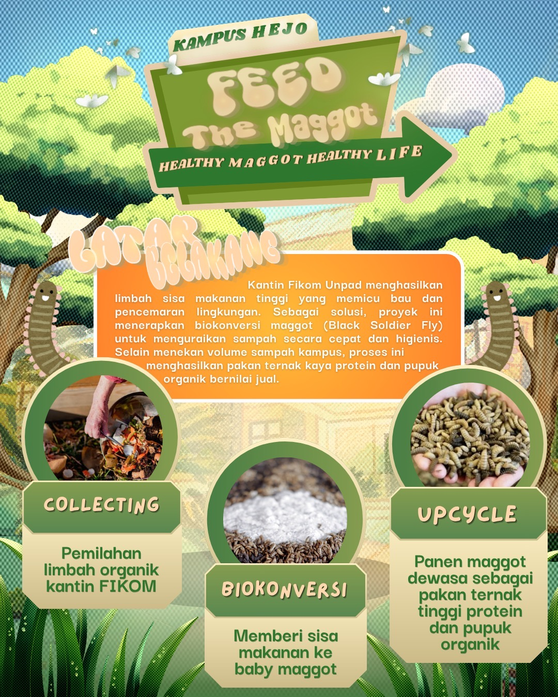

Feed The Maggot · Healthy Maggot Healthy Life
Sisa makanan Kantin FIKOM kami olah bersama maggot Black Soldier Fly menjadi pakan ternak tinggi protein dan pupuk organik. Sampah berkurang, lingkungan lebih bersih, dan ada nilai ekonominya.
Kantin FIKOM ramai dikunjungi mahasiswa dan civitas akademika setiap hari. Sisa makanannya menumpuk, tercampur dengan plastik, lalu diangkut ke TPA tanpa dipilah. Akibatnya muncul bau tidak sedap, lingkungan jadi kurang bersih, dan sampah yang terurai di TPA memicu emisi gas rumah kaca.
perkiraan timbulan sampah organik Kantin FIKOM per hari
per minggu operasional, sebagian besar masih tercampur dan langsung ke TPA
target reduksi volume sampah organik kantin per hari
tenant/stand makanan yang beroperasi di Kantin FIKOM
Sumber: observasi dan estimasi Tim Batagor, Laporan Rencana Proyek Aksi Sosial MAGOPRENEUR (2026).

Kegiatan kami berjalan dalam empat tahap. Pilih salah satu tahap untuk melihat rinciannya.
Rasakan sendiri alur MAGOPRENEUR lewat game. Jelajahi peta kampus, pilah sampah, rawat maggot, lalu jual hasil panenmu.
Progres tersimpan otomatis di perangkatmu. Paling nyaman dimainkan di HP atau dengan tampilan layar penuh.
Kang Raka adalah asisten virtual Kampus Hejo. Ia siap menjawab pertanyaan seputar budidaya maggot, proyek MAGOPRENEUR, cara bermain game, dan beberapa tips kuliah. Pilih topik, dan Kang Raka langsung menjawab. Tombolnya juga selalu ada di pojok kanan bawah.
Delapan mahasiswa dari tujuh fakultas berbeda di Universitas Padjadjaran, bersatu untuk Kampus Hejo.